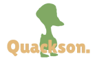

We are a group of 4 students who were studying IT at the same class. Quackson was born as a school project. We had to create a videogame from zero on pygame. Our objectives are learning how to program a videogame and also making it entertaining enough to make you enjoy it! We want to create fresh experiences that gives both old glory of the retro and new developing software to bring new games to our community.
Our team is currently developing an alternative version of our first game, “Remember me, Charlotte”. We are using another language on GameMaker, and a more worked demo version, that you will have the possibility to download free on the official page of the game or on itch.io. We are also trying to expand our brand to make you able to enjoy some of our merch made by us, so you can alsol be part of the Quackson Squad!.
We had to use lots of websites and aplications to build and enhance our videogame. We used pygame, an extension for Visual Studio code for the programming, which is probably one of our most dificult challenges that we had till this day. Next we used canva, gimp, piskel, and more for the designing, sounds, and more modificacions that we still use today.